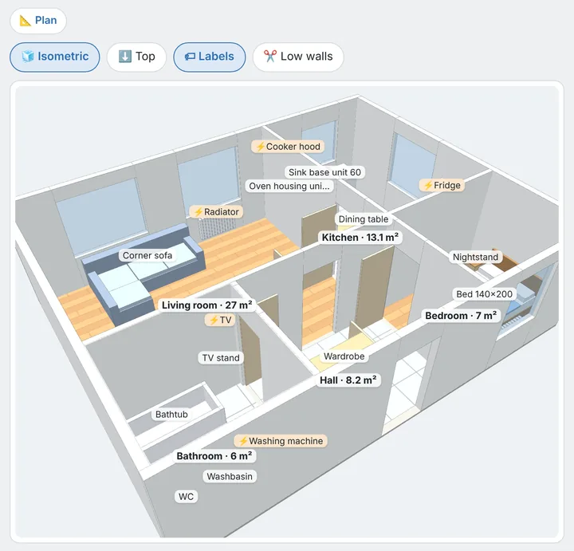
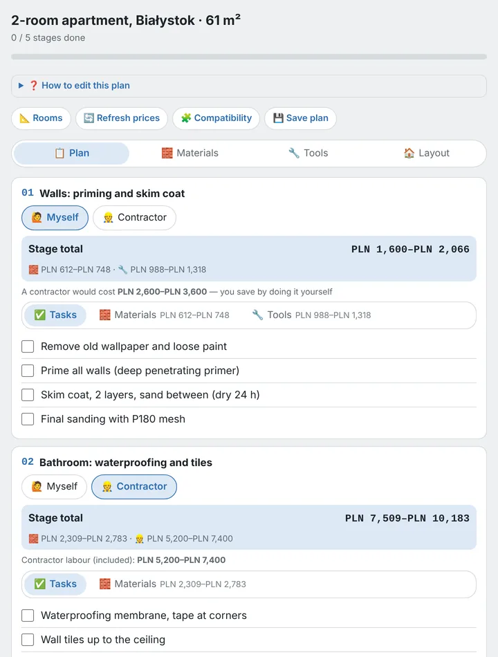
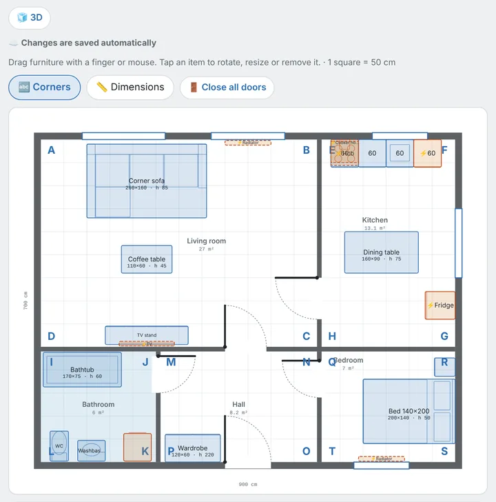

Спланируйте ремонт вместе с Claude
Remont — бесплатный MCP-коннектор, который превращает чат с Claude в полный план ремонта: порядок работ, расчёт материалов по размерам комнат, цены строительных магазинов вашей страны, расценки мастеров, чек-лист, планировка квартиры и 3D-вид.
Подключить к Claudehttps://remont-mcp.wrpzdm9jmt.workers.dev/mcp
Как это выглядит





Что умеет
Материалы по размерам комнат
Краска, шпаклёвка, грунт, плитка, клей, затирка, ламинат, подложка, гипсокартон — с упаковками и запасом.
Порядок работ
Этапы в правильной последовательности со временем высыхания; задачи — чек-листом.
Цены магазинов
Строительные магазины вашей страны со ссылками на товары; варианты стандарт, премиум и люкс.
Сам или мастер
Каждый этап можно переключить между «сам» и «нанять мастера» — смета пересчитается.
Инструменты
Что купить, а что дешевле взять в аренду — для этапов, которые делаете сами.
Планировка и 3D
Комнаты, двери и окна, мебель и кухонные модули перетаскиваются, есть 3D-вид.
Сохранённые планы
Личный код открывает ваши планы в любом чате или по ссылке; покупки и отметки сохраняются.
22 страны
ЕС, Великобритания, США, Канада, Украина и другие. Планы на 5 языках.
Как это работает
- Один раз добавьте коннектор в Claude.
- Расскажите Claude о квартире или пришлите фото плана — или заполните короткую анкету.
- Получите интерактивный план: меняйте материалы, переключайте «сам / мастер», отмечайте задачи, сохраняйте.
Подключение
Claude (сайт, компьютер, телефон)
- Откройте claude.ai и войдите.
- Откройте Настройки → Коннекторы (в новых версиях: Customize → Connectors).
- Нажмите «Добавить свой коннектор» (Add custom connector) или «+».
- Название: Remont. URL: адрес сервера выше. OAuth и ключи не нужны — нажмите «Добавить».
- В чате откройте меню «+» / инструменты и проверьте, что Remont включён. Дальше просто спросите про ремонт.
Бесплатный тариф: один свой коннектор. Team / Enterprise: сначала его добавляет владелец в настройках организации. После добавления он работает и в приложениях Claude на компьютере и телефоне.
ChatGPT
В режиме разработчика добавьте свой коннектор (приложение) с адресом сервера, без авторизации.
Claude Code
claude mcp add --transport http remont https://remont-mcp.wrpzdm9jmt.workers.dev/mcp
Cursor, VS Code и другие MCP-клиенты
{
"mcpServers": {
"remont": {
"url": "https://remont-mcp.wrpzdm9jmt.workers.dev/mcp"
}
}
}Попробуйте спросить
Вопросы
Это бесплатно?
Да. Коннектор бесплатный, регистрация не нужна. Нужен аккаунт в Claude (или другом MCP-клиенте); можно ли добавлять свои коннекторы, зависит от вашего тарифа там.
Откуда цены?
Claude ищет их в строительных магазинах вашей страны и даёт ссылку на каждый товар. Если цену в магазине ещё не нашли, в плане стоит примерная цена со знаком ≈.
А мои данные?
Ни аккаунта, ни личных данных. Планы хранятся под случайным кодом; ссылки на планы не угадать, и они не индексируются.
Какие страны?
Встроено 22 страны, в том числе Польша, Германия, Великобритания, США, Канада, Украина, Беларусь, Казахстан. Для других стран Claude сам добавит валюту и магазины.